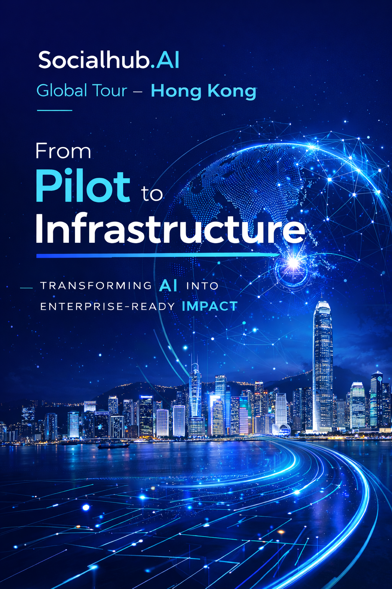
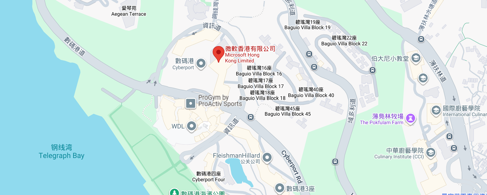

Dear Executive Leader,
It is my pleasure to invite you to an exclusive executive roundtable as part of the Socialhub.AI Global Tour, taking place in Hong Kong on April 15, 2026.
As artificial intelligence moves beyond experimentation and into the core of enterprise operations, a fundamental question emerges: How do we transition from isolated pilots to production-grade AI infrastructure?
This is not a technology showcase. It is a closed-door conversation among senior leaders from retail and consumer industries who are actively navigating this transformation. Together, we will explore the structural shifts required in architecture, governance, and operating models to realize sustainable AI value.
The session is designed for candid peer exchange. With only 12 seats available, every participant brings a distinct perspective and a shared commitment to moving beyond experimentation.
We will gather at the Microsoft Hong Kong office in Cyberport, bringing together practitioners from leading global brands to discuss:
- How to transition from pilot projects to production-ready AI systems
- The evolution of loyalty architecture in an AI-native era
I believe your experience and insights would add significant value to this dialogue. I sincerely hope you will join us.
Please feel free to reach out if you have any questions. I look forward to the opportunity to connect in Hong Kong.
Warm regards,
Chunbo Huang
Founder & CEO, Socialhub.AI
尊敬的企業領袖：
誠摯邀請您參加 Socialhub.AI 全球巡迴系列活動中的高管圓桌會議，將於2026年4月15日在香港舉行。
隨著人工智能從實驗階段進入企業運營的核心，一個根本性的問題浮現：我們如何將孤立的試點項目轉化為生產級的AI基礎設施？
這不是一場技術展示會，而是零售和消費行業高管之間的閉門對話。與會者正在積極推動企業轉型，我們將共同探討實現可持續AI價值所需的架構、治理和運營模式變革。
本次會議專為坦誠的同儕交流而設計。僅設12個席位，每位參與者都將帶來獨特的視角，並共同承諾超越實驗階段。
我們將在微軟香港辦公室（數碼港）匯聚來自全球領先品牌的實踐者，共同探討：
- 如何將試點項目轉化為生產就緒的AI系統
- AI原生時代的忠誠度架構演進
我相信您的經驗和見解將為這次對話增添重要價值。誠摯期待您的蒞臨。
如有任何問題，歡迎隨時與我們聯繫。期待在香港與您相見。
此致敬禮
黃純波
Socialhub.AI 創辦人兼首席執行官
As AI moves beyond experimentation, this closed-door executive session brings together senior leaders across retail and consumer industries to discuss the structural shift from pilots to production-grade AI systems.
The focus is not on tools, but on architecture, governance, and long-term operating models.
Theme: From Pilot to Infrastructure - Transforming AI into Enterprise-Ready Impact
This is a practitioner-led dialogue, not a vendor presentation. You will engage directly with peers facing similar challenges, share hard-won lessons, and leave with actionable frameworks for your AI transformation journey.
隨著AI超越實驗階段，本次閉門高管會議匯聚零售及消費行業的資深領袖，共同探討從試點到生產級AI系統的結構性轉變。
我們的重點不在工具，而在於架構、治理和長期運營模式。
主題：從試點到基礎設施 - 將AI轉化為企業級影響力
這是一場由實踐者主導的對話，而非供應商演示。您將直接與面臨類似挑戰的同儕交流，分享寶貴經驗，並帶走可付諸實踐的AI轉型框架。
Wednesday, April 15, 2026 | Hong Kong
Welcome refreshments and informal introductions
Mahesh Neelakantan, Industry Advisor, Retail & Consumer Goods
Chunbo Huang, Founder & CEO, Socialhub.AI
Framing the discussion: moving AI from isolated use cases to enterprise infrastructure.
A brief round of perspectives: where each organization stands in its AI journey, and the structural challenges ahead.
How to transition from pilot projects to production-ready AI systems
Key themes: governance, data architecture, workflow integration, risk management, and measurable ROI.
Refreshment break and continued networking
The evolution of loyalty architecture in an AI-native era
Key themes: behavior-based value, margin-aware personalization, omni-channel identity, and sustainable customer economics.
David Kwok, Head of AI & Digital Native Pursuit, Microsoft Asia
Synthesis of key insights and forward-looking considerations for enterprise AI transformation.
2026年4月15日（星期三）| 香港
歡迎茶點及非正式交流
Mahesh Neelakantan，零售及消費品行業顧問
黃純波，Socialhub.AI 創辦人兼首席執行官
議題框架：將AI從孤立用例推進至企業基礎設施。
簡要分享各組織的AI旅程現狀及面臨的結構性挑戰。
如何將試點項目轉化為生產就緒的AI系統
核心主題：治理、數據架構、工作流程整合、風險管理及可衡量的投資回報。
休息及持續交流
AI原生時代的忠誠度架構演進
核心主題：基於行為的價值、利潤感知的個性化、全渠道身份及可持續的客戶經濟學。
David Kwok，微軟亞洲AI及數碼原生業務拓展主管
核心洞察總結及企業AI轉型前瞻思考。
Address: 15th Floor, Cyberport 2, 100 Cyberport Road, Hong Kong
Date: Wednesday, April 15, 2026
Time: Check-in at 1:30 PM, Session starts at 2:00 PM (HKT)

RSVP: Please confirm by April 7, 2026. Contact: business@socialhub.ai
地址：香港數碼港道100號數碼港二座15樓
日期：2026年4月15日（星期三）
時間：下午1:30簽到，下午2:00正式開始（香港時間）
回覆確認：請於2026年4月7日前確認出席。聯繫方式：business@socialhub.ai
Transforming AI into Enterprise-Ready Impact.
Join us in Hong Kong, April 15, 2026.